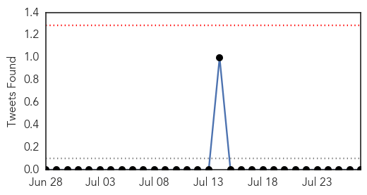
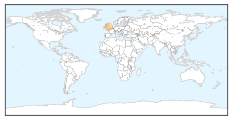

Swine Flu
30-Day Web Trend
3 alerts, 1 warnings

30-Day Twitter Trend
0 alerts, 0 warnings

Article Locations
Article Confidences

Top Articles:
Top Tweets:
-
No tweets found for Jul 27, 2014
Unknown
30-Day Web Trend
4 alerts, 3 warnings

30-Day Twitter Trend
0 alerts, 0 warnings

Article Locations

Article Confidences

Top Articles:
- 0.991
- Arunachal Pradesh sounds high alert after encephalitis death
- 0.967
- KSWO, Lawton, OK- Wichita Falls, TX: News, Weather, Sports. ABC, 24/7, Telemundo -
- 0.917
- Chicago Tribune
- 0.917
- Chicago Tribune
- 0.917
- Chicago Tribune
- 0.917
- Chicago Tribune
- 0.917
- Chicago Tribune
- 0.917
- Chicago Tribune
- 0.910
- The world windows to Thailand
- 0.910
- The world windows to Thailand
- 0.877
- Officials of the National Health Mission told that the deadly Japanese encephalitis has so far taken the lives of 75 people
- 0.866
- Huge monsoon storm cell is pictured over Venice Beach
- 0.866
- Obama, in call with Netanyahu, urges humanitarian ceasefire in Gaza
- 0.866
- Ukraine blames rebels for not allowing access to crash site
- 0.866
- Israel's Netanyahu says Hamas has violated its own ceasefire -CNN
- 0.866
- Members of the CAL Fire Vina Helitack crew battle the "Sand Fire" near Plymouth, California
- 0.866
- Firefighters battle a spot fire in a vineyard as the "Sand Fire" burns near Plymouth, California
- 0.832
- More encephalitis deaths, but Health Minister says situation under control
- 0.813
- Bengal seeks JE vaccination drive in Cooch Behar
- 0.782
- Lithuania to slaughter 20,000 pigs as swine fever spreads
- 0.751
- Toll 111, Deb blames count error
- 0.689
- Is the Pennsylvania health department fracking-phobic?
- 0.666
- 'Kissing bug' disease prompts growing concern in U.S.
- 0.663
- 'Kissing Bug' Disease Prompts Growing Concern in U.S.
- 0.661
- Bengal seeks central help for encephalitis vaccination
- 0.640
- Twists endure in federal response to W.Va. spill
- 0.631
- Assam govt takes up intensive measures to check JE, AES
- 0.628
- Unhygienic conditions reason behind diarrhea outbreak, says dist admn
- 0.608
- Campaign to battle Lyme disease mounts as Hamptons epidemic grows
- 0.596
- School's near: Time to think about immunizations for students
- 0.576
- Carrier: warrant issued for possible illegal immigrant with deadly strain of tuberculosis
- 0.560
- Encephalitis toll rises to 111
- 0.543
- Phuket: ‘No cause for alarm’ after man killed by flesh-eating bug
- 0.537
- HPV Vaccination Rates Among Teens See A Slight Increase, But Are Still Too Low
- 0.532
- AIDS: Botswana Fights to Eradicate
Top Tweets:
-
No tweets found for Jul 27, 2014